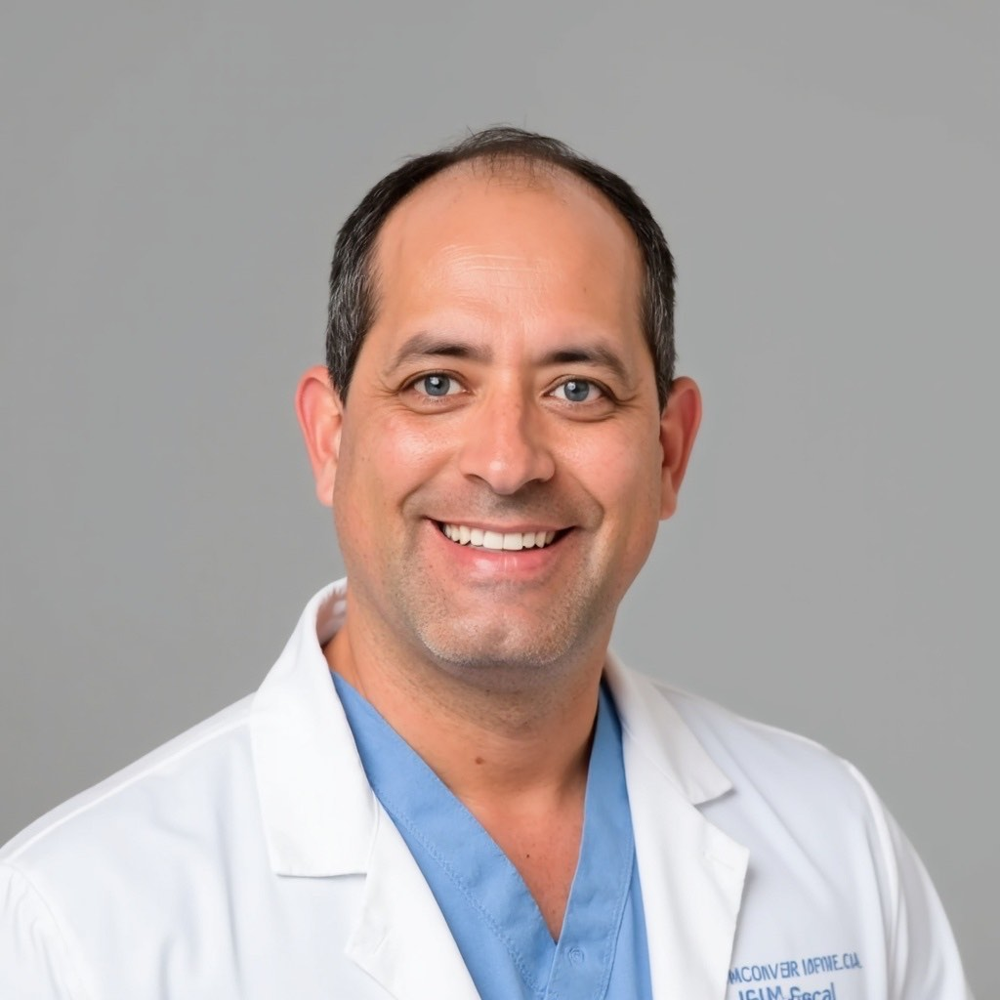
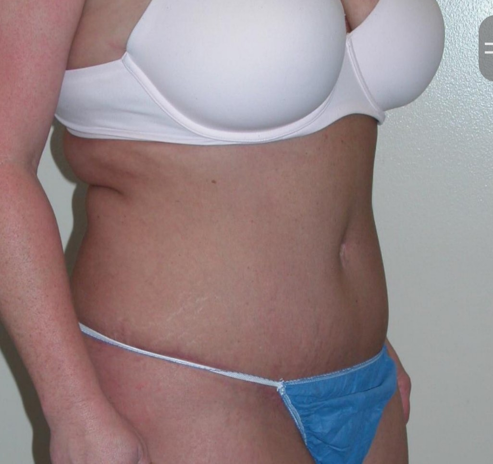
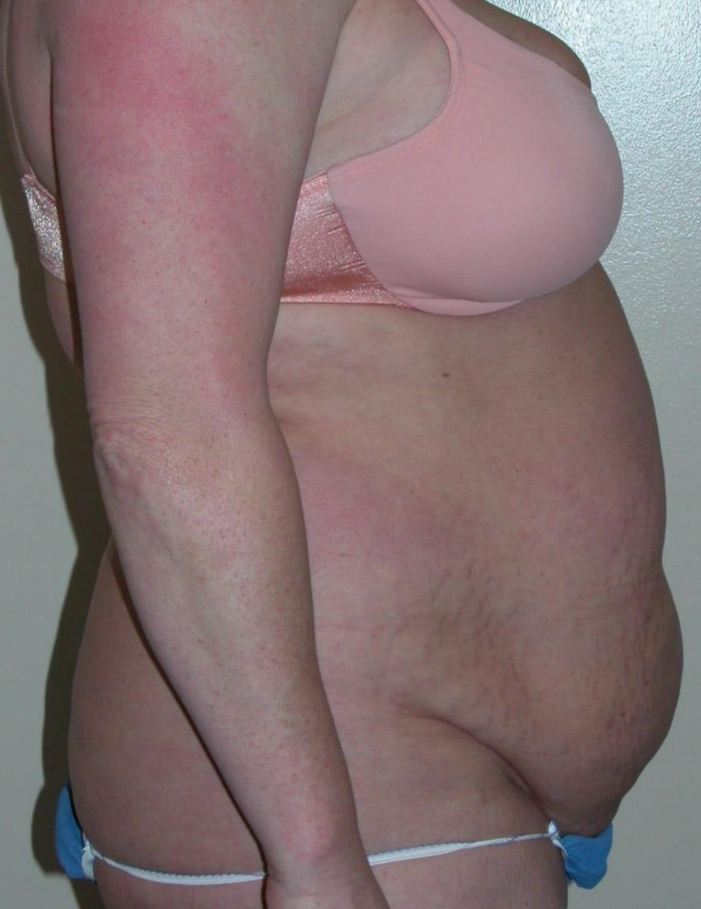
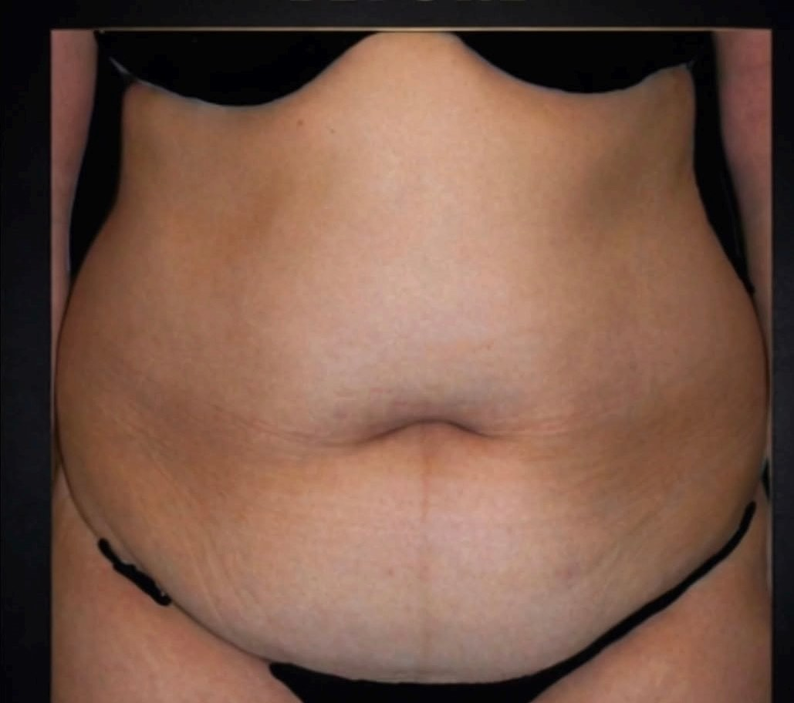
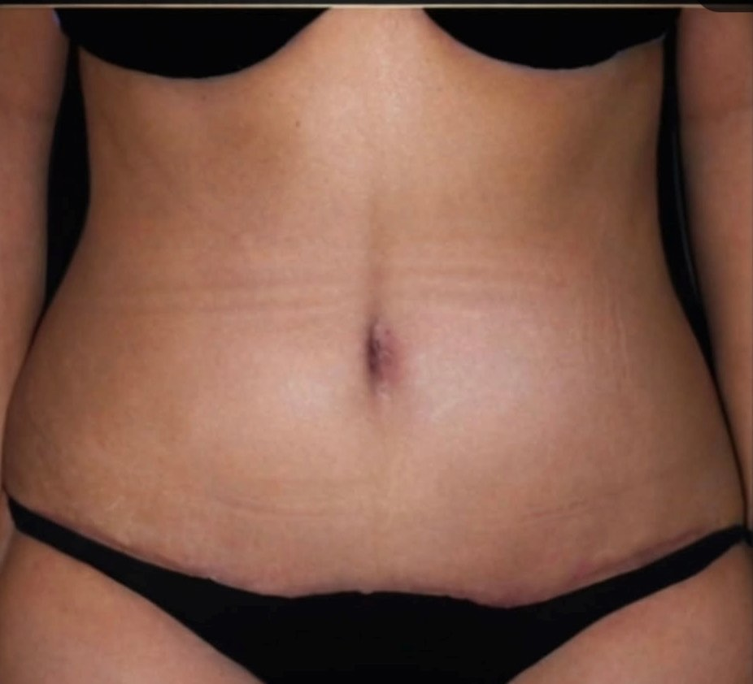
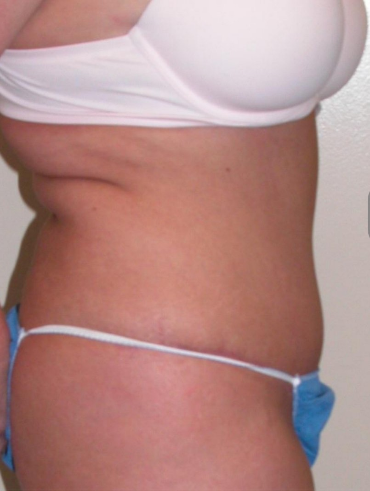

Robert Rodrigues, MD
Look like yourself.
Plastic and reconstructive surgery in South Jordan, Utah. Over two decades of operating, and a stated preference for the smaller change.
801-810-0761
Education and surgical training
- Carroll College
- University of Colorado Health Sciences Center
- Case Western Reserve University
- University of Michigan
- Mayo Clinic
Undergraduate, medical degree, integrated plastic surgery training, advanced fellowship.
Reconstructive first. Aesthetics after.
Where the judgment comes from
Early in his career Dr. Rodrigues focused on reconstructive plastic surgery, including breast reconstruction, complex wound reconstruction, and advanced hand and wrist surgery. Those procedures carry greater surgical complexity and demand a deep understanding of anatomy, tissue healing and precision.
Why it matters for revisions
Where a previous procedure has altered anatomy or created a problem, a reconstructive perspective is often what makes it possible to restore balance and natural form.
Science and art, not one or the other
A childhood spent drawing, painting and sculpting sat alongside a pull toward physics, chemistry and biology. Plastic surgery is one of the few specialties that asks for both at once.
Procedures
Body
BBL (Brazilian Butt Lift). Tummy tuck, removing excess skin and fat and tightening abdominal muscles. Liposuction.
Breast
Breast augmentation, augmentation mastopexy, and inverted nipple repair.
Face and neck
Facelift and neck. Rhinoplasty. Blepharoplasty, upper and lower.
Skin
Morpheus8 skin tightening.
Before and after





Photographs are of actual patients of Utah Aesthetic Surgery. Individual results vary and these images are not a prediction of any individual outcome.
In patients' own words
“He even discouraged me from the procedure that would have made him more money. It wasn't the right thing for me.” Danny, December 2019
“He never pressured me into choosing a more expensive option and genuinely cared about what was right for me.”
“I'm 6 weeks post op from an extended tummy tuck and breast augmentation and I am loving my results. He listened to what I wanted and the results I wanted to achieve.”
“Very knowledgeable and took time to listen to me as well as explain procedures and set realistic expectations. He is an excellent surgeon.”
“Very great bedside manners, makes you feel safe and he listened to my concerns. I have referred him 3 times and will continue to refer him.”
“Extremely knowledgeable, professional, and provided exceptional care. I have already referred three friends.”
“The clinic is super clean and in a convenient location. I would highly recommend this doctor.”
Start with a conversation.
- Call
- 801-810-0761
- Visit
- 10382 S. Jordan Gateway, Suite 100
South Jordan, UT 84095 - Hours
- Monday to Friday, 8:00 AM to 5:00 PM. Saturday and Sunday, closed.